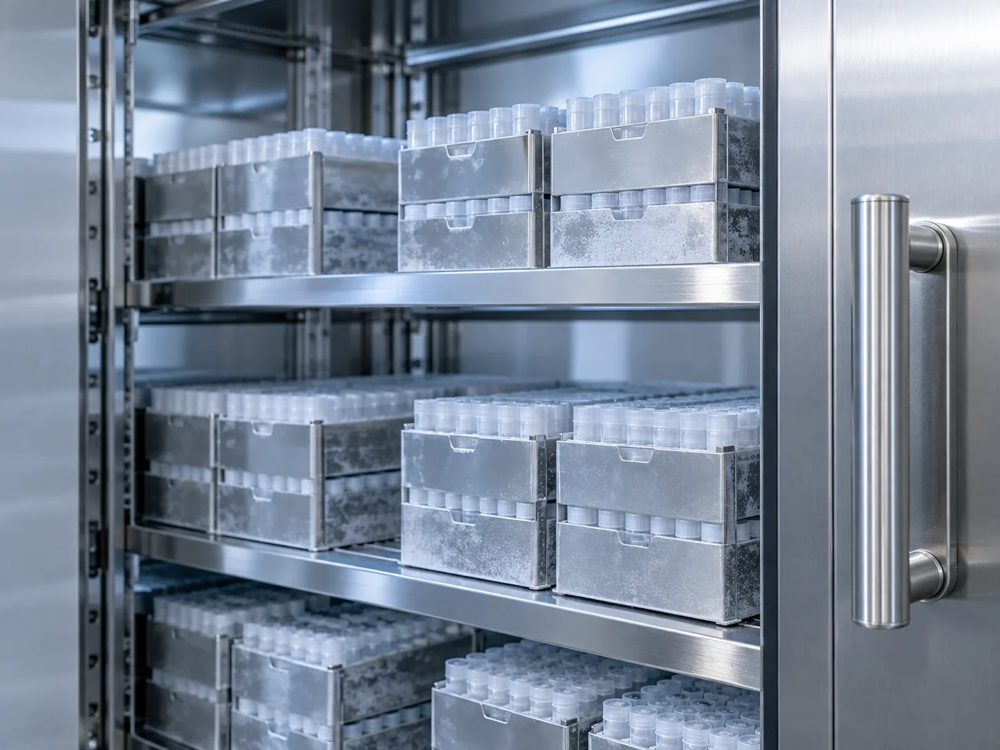
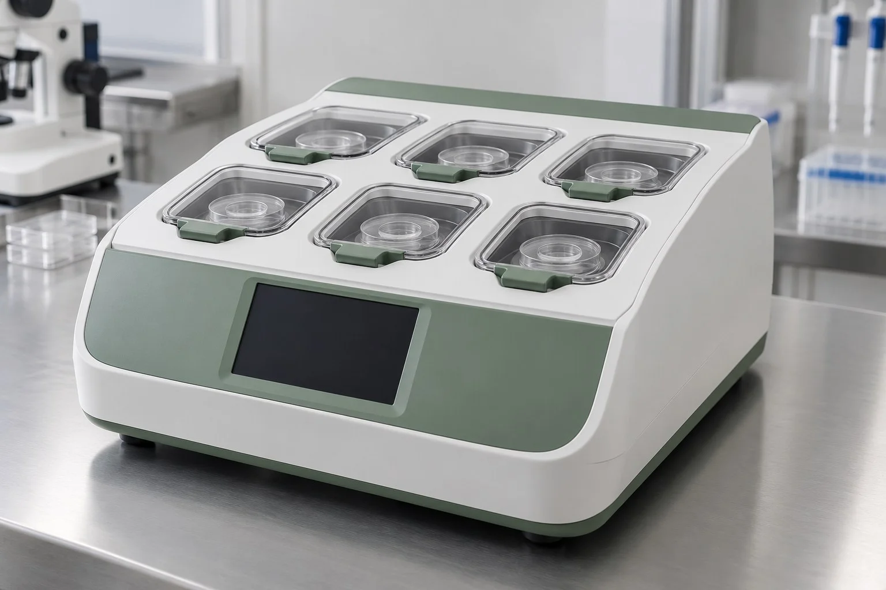
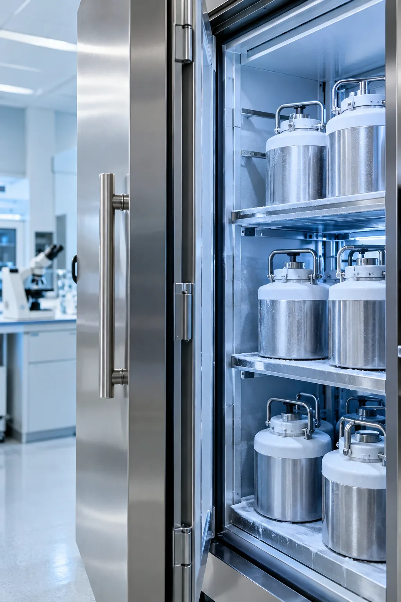
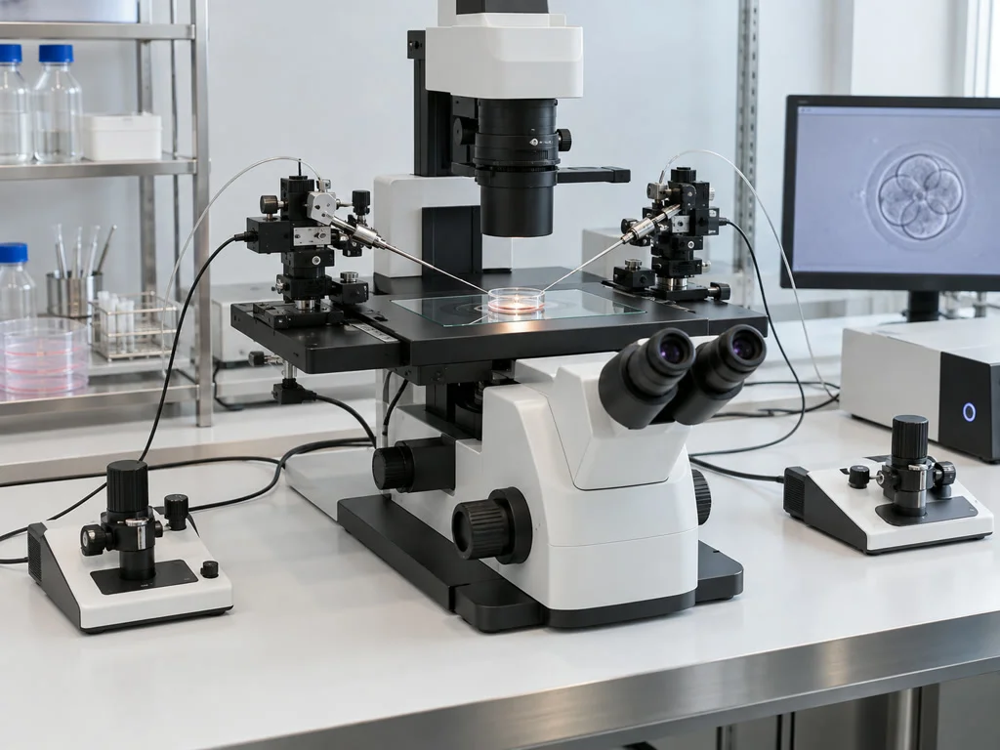
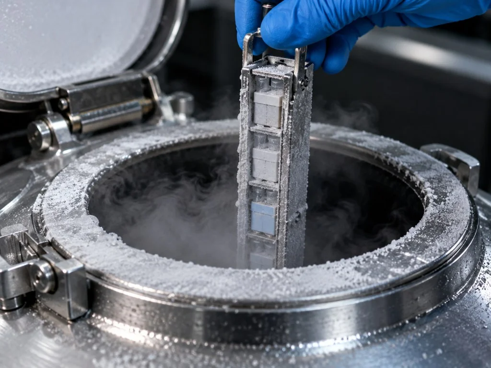
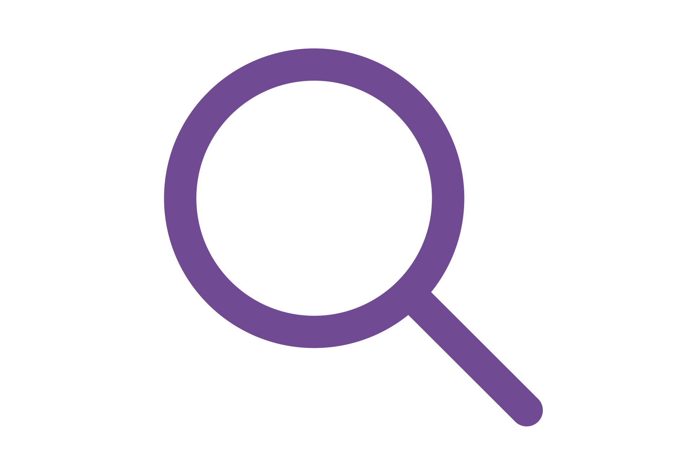
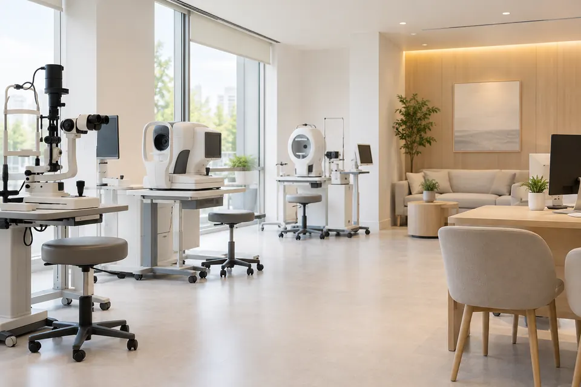
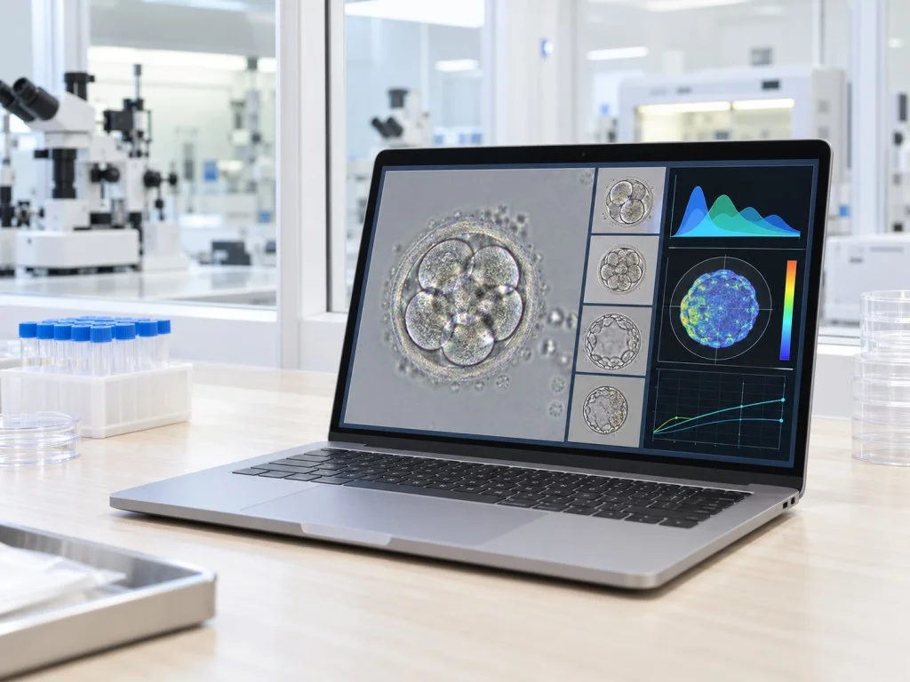
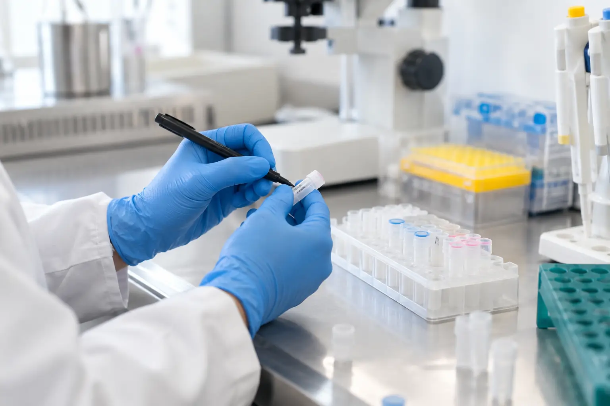

난임연구실
배아가 자라는 환경을 관리하고
발달 과정을 기록합니다.
누비아 연구실의 배양 장비

무균 클린시스템
공기 속 입자와 휘발성 물질을 걸러내고 온도와 습도를 확인하는
청정 공기 관리 설비
전자 매칭 시스템
식별 태그의 무선 신호를 읽어 환자와 검체 용기의 정보를 비교하는 장치로
단계별 검체 혼선 위험을 줄입니다

타임랩스 인큐베이터
배양기 안의 카메라가 배아의 분열을 일정 간격으로 촬영하므로
관찰을 위해 외부에 노출하는 횟수를 줄입니다

독립 챔버 배양기
배양 공간을 구분해 사용하고 챔버별 조건을 확인하며
배아의 발달 상태를 관찰하는 장비
레이저 보조부화장치
배아 주변 투명대의 일부에 미세하게 작용하는 레이저를 이용해
필요한 부위의 두께를 조절하는 장비
디지털 정자 영상 분석 장치
채취한 정액을 영상으로 확인하며 정자 수와 움직임, 모양 등을
여러 지표로 정리하는 분석 프로그램
초급속 세포 동결 장치
세포 안에 얼음결정이 생기는 일을 줄이도록 짧은 시간에
온도를 낮춰 난자와 배아를 동결하는 장치

배아 미세조작 장치
현미경으로 관찰하면서 미세한 도구의 위치를 조절하여
세포를 다루는 과정을 보조합니다

생식세포 냉동 보존 장치
동결한 난자와 배아를 낮은 온도에서 보관하고 온도 변화를 확인해
보존 중 필요한 조건을 관리합니다

누비아 연구실의 관리 방법
배아 불일치 방지 시스템
채취한 검체가 처리되는 단계마다 식별 정보를
확인하고 이동 이력을 남기는
전자 검체 확인 장치를 사용합니다.

AI를 이용한 배아 분석 솔루션
촬영한 배아의 분열 양상을 분석해
이식 전 평가에 참고할 자료를 제공합니다.

배아 손상을 줄이는 동결기술
동결과 해동 단계에서 세포의 상태를 관찰하고
배아에 적합한 방법을 선택하여
이식 전에 생존과 발달 여부를 확인합니다.

배양 과정을 함께 살피는 연구원
오수연 연구실장
- ・한빛대학교 생명과학과 졸업, 발생생물학 석사
- ・생식세포연구회 회원
- ・임상배양연구회 배양분과 연구원
- ・보조생식연구모임 회원
- ・생식면역연구회 회원
- ・국제 배양기술교류회 회원
- ・한빛의료원 배양실 연구원 및 주임연구원 근무
- ・새봄여성의료원 생식세포 연구실 수석연구원 근무
- ・누비아 여성의원 배양 연구실장
난임연구실,
누비아에서 답해드립니다
수정된 배아를 모두 이식할 수 있나요?
수정이 확인돼도 이후 분열이 중단되는 배아가 있어 처음 수정된 수와 이식 가능한 수가 다를 수 있습니다.
생식세포의 조건과 배양 중 관찰한 변화 등을 종합해 이식 여부를 검토합니다.
배양 기간은 길수록 좋은가요?
포배기까지 관찰하면 며칠 동안의 분열 양상을 더 확인한 뒤 이식할 배아를 고를 수 있습니다.
발달이 멈추는 배아도 있으므로 남아 있는 배아의 수와 상태를 보고 관찰 기간을 정합니다.
배아 등급만으로 임신을 예측할 수 있나요?
등급에는 관찰 당시의 세포 모양과 발달 정도가 반영되며, 배아를 평가할 때 참고합니다.
등급이 높아도 임신이 되지 않을 수 있고, 모양을 관찰한 결과로 염색체 상태를 확정할 수는 없습니다.
해동한 배아는 어떤 점을 확인하나요?
보관 전에 동결했다는 사실만으로 배아의 상태가 나빠졌다고 판단하지 않습니다.
세포 손상을 줄이는 동결 방법을 사용해도 해동을 견디지 못하는 배아가 있을 수 있어, 해동 뒤 상태를 보고 이식 계획을 정합니다.
모든 배아가 염색체 검사를 받아야 하나요?
배아에서 소량의 세포를 얻어 염색체 개수를 살펴보는 검사이며, 치료받는 모든 분에게 일률적으로 시행하지 않습니다.
연령과 이전 임신 경과, 시술 경험 및 확보한 배아 수를 바탕으로 검사가 도움이 될 부분과 제한점을 설명합니다.